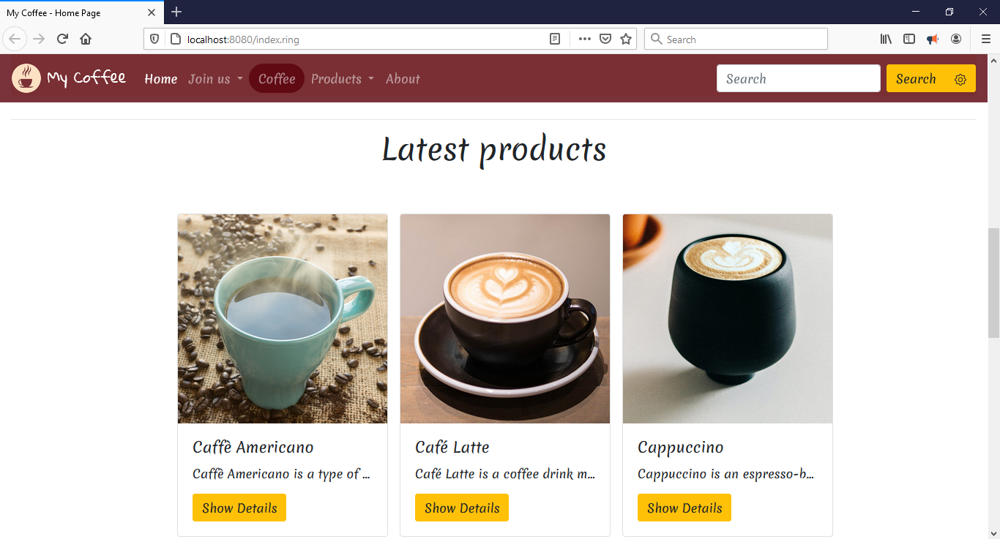
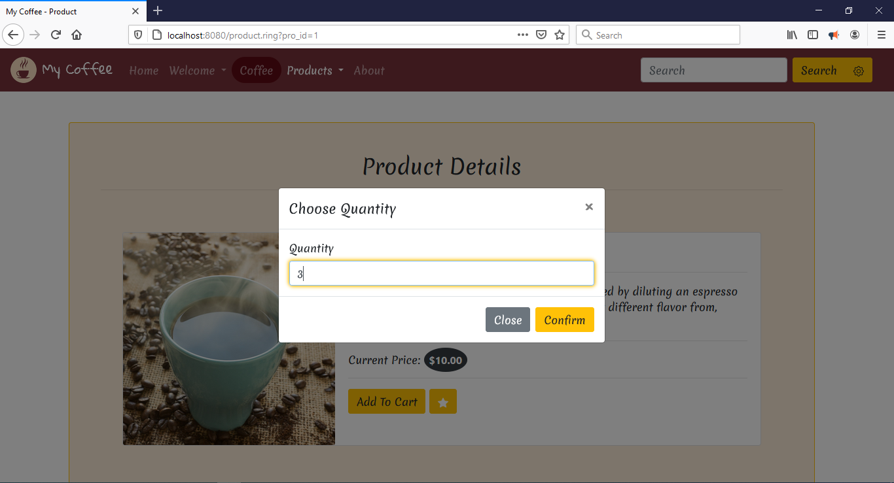
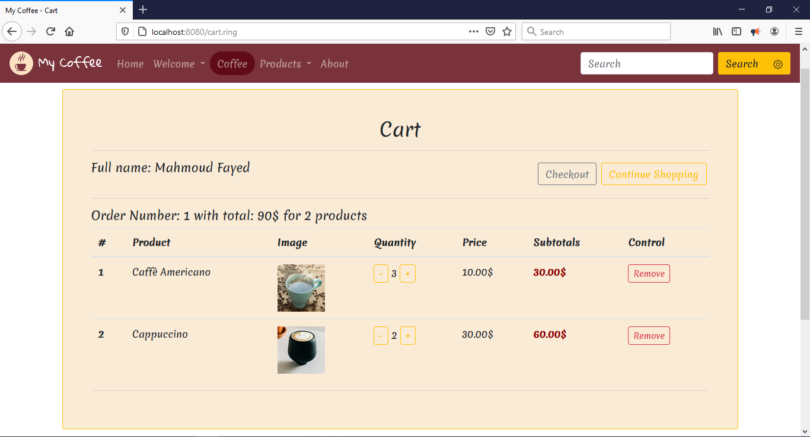

What is new in Ring 1.14?¶
In this chapter we will learn about the changes and new features in Ring 1.14 release.
List of changes and new features¶
Ring 1.14 comes with the next features!
MyCoffee (Web Application)
Web Development Samples
More Samples
Erlang B Formula
Customers Form
RingTilengine Extension
RingLibui Extension
RingSockets Extension
RingThreads Extension
Better RingOpenSSL
More Functions
Better Functions
Better Performance For Strings
Better Handling For Numbers
Using CLOC (Count Lines of Code)
More Improvements
MyCoffee (Web Application)¶
A web application that uses the WebLib library and PostgreSQL database
Screen Shots:
  Web Development Samples¶
Starting from lesson 301, the Hassouna Course provides lessons about web development.
These lessons uses the WebLib library for Back-end web development.
Special YouTube playlist for these lessons:
The samples are added to this folder:
Screen Shot:
Calculator Sample
More Samples¶
The next samples are added to the samples folder
ring/samples/UsingQML/sample12 folder
ring/samples/General/TimeServer folder
ring/samples/General/BinarokuGame folder
ring/samples/Language/EnumGenerator folder
ring/samples/Language/DynamicObject folder
ring/samples/Drawing/MatrixMultiply3DRotationCube
Screen Shots:


Customers Form¶
An application that uses SQLite and TableWidget
The Use Interface is provided in Arabic, English & French

RingTilengine Extension¶
This extension provides support for Tilengine - The 2D retro graphics engine with raster effects
Example:
load "tilengine.ring"
TLN_Init(400, 240, 1, 0, 0)
TLN_SetLoadPath("assets\sonic")
foreground = TLN_LoadTilemap ("Sonic_md_fg1.tmx", NULL)
TLN_SetLayerTilemap(0, foreground)
TLN_CreateWindow(NULL, 0)
while TLN_ProcessWindow()
TLN_DrawFrame(0)
end
TLN_DeleteTilemap(foreground)
TLN_Deinit()
Screen Shots:


RingLibui Extension¶
This extension provides complete support for Libui
Using this extension we can develop and distribute lightweight GUI Applications using Ring (Less than 1 MB)
Runtime files and their size
Ring.dll (448 KB)
Libui.dll (210 KB)
Ring_Libui.dll (633 KB)
Total : 1,291 KB without compressing the files
After compressing the files (To ZIP file) - Total : 504 KB
Example:
load "libui.ring"
oWindow = uiNewWindow( "Say Hello", 500, 80, True)
uiWindowOnClosing(oWindow,"closeApp()")
lbl1 = uiNewLabel("Name: ")
text1 = uiNewEntry()
btn1 = uiNewButton("SayHello")
uiButtonOnClicked(btn1,"sayHello()")
btn2 = uiNewButton("Close")
uiButtonOnClicked(btn2,"closeApp()")
lbl2 = uiNewLabel("")
g = uiNewGrid() uiGridSetPadded(g, 1) uiWindowSetChild(oWindow, g)
uiGridAppend(g, lbl1, 0, 0, 2, 1, 1, uiAlignCenter, 0, uiAlignCenter)
uiGridAppend(g, text1, 1, 0, 2, 1, 1, uiAlignFill, 0, uiAlignFill)
uiGridAppend(g, btn1, 0, 1, 1, 2, 1, uiAlignFill, 0, uiAlignFill)
uiGridAppend(g, btn2, 2, 1, 1, 1, 1, uiAlignFill, 0, uiAlignFill)
uiGridAppend(g, lbl2, 0, 3, 2, 1, 1, uiAlignCenter, 0, uiAlignCenter)
uiControlShow( oWindow )
uiMain()
func sayHello
uiLabelSetText(lbl2,"Hello " + uiEntryText(text1))
func closeApp
uiQuit()
Screen Shots:


RingSockets Extension¶
In Ring, We have sockets using different extensions like RingQt, RingLibuv and RingLibSDL
In this release we provide a special extension for sockets
This will be useful if your application doesn’t use the previous libraries
Example (Server Code)
# TCP SERVER
load "sockets.ring"
sock = socket(AF_INET,SOCK_STREAM,0)
bind(sock,"127.0.0.1",5050)
listen(sock,5)
ns = accept(sock)
send(ns,"Hello Client")
msg = recv(ns,1024)
? "Client Say >> " + msg
close(sock)
? "Socket connection closed"
Example (Client Code)
# TCP Client
load "sockets.ring"
sock = socket(AF_INET,SOCK_STREAM)
connect(sock,"127.0.0.1",5050)
send(sock,"Hello Server")
msg = recv(sock,1024)
? "Server Say >> " + msg
close(sock)
? "Socket connection closed"
RingThreads Extension¶
In Ring, We have threads using different extensions like RingQt, RingLibuv and RingAllegro
In this release we provide a special extension for threads
This will be useful if your application doesn’t use the previous libraries
Example:
load "threads.ring"
func main
nThreads = 2
aList = list(nThreads)
for x=1 to nThreads
aList[x] = new_thrd_t()
thrd_create(aList[x],"Hello("+x+")")
next
for x=1 to nThreads
res= 0
thrd_join(aList[x],:res)
next
? :Done
shutdown()
func Hello x
for r=1 to 100
? "Message from the Hello("+x+") function"
next
Better RingOpenSSL¶
The next functions are added to the RingOpenSSL extension
These functions compute the hash of large files/data without the need to load all of the content in a single string.
md5init() -> MD5_CTX
md5update (MD5_CTX, string) -> 1 for success or 0 for failure
md5final (MD5_CTX) -> string
sha1init() -> SHA_CTX
sha1update (SHA_CTX, string) -> 1 for success or 0 for failure
sha1final (SHA_CTX) -> string
sha224init() -> SHA224_CTX
sha224update (SHA224_CTX, string) -> 1 for success or 0 for failure
sha224final (SHA224_CTX) -> string
sha256init() -> SHA256_CTX
sha256update (SHA256_CTX, string) -> 1 for success or 0 for failure
sha256final (SHA256_CTX) -> string
sha384init() -> SHA384_CTX
sha384update (SHA384_CTX, string) -> 1 for success or 0 for failure
sha384final (SHA384_CTX) -> string
sha512init() -> SHA512_CTX
sha512update (SHA512_CTX, string) -> 1 for success or 0 for failure
sha512final (SHA512_CTX) -> string
More Functions¶
DirExists() Function
DirExists(cDirPath) ---> returns 1 if the directory exists
GetPathType() Function
GetPathType(cPath) ---> 0 if the path doesn't exists
1 if it corresponds to existing file
2 if it corresponds to existing directory
-1 if the path exists but has
an unknown type (e.g. a pipe)
SysSet() Function
We can set environment variables using the SysSet() function
SysSet(cVariable, cValue) ---> Returns 1 for success and return 0 for failure
SysUnset() Function
We can delete an environment variables using the SysUnset() function
SysUnset(cVariable) ---> Returns 1 for success and return 0 for failure
GetArch() Function
We can detect the architecture of the Ring executable using the GetArch() function
Syntax:
GetArch() ---> cString (The name of the architecture of the Ring executable)
Example:
switch getarch()
on "x86"
? "x86 32bit architecture"
on "x64"
? "x64 64bit architecture"
on "arm64"
? "ARM64 64bit architecture"
on "arm"
? "ARM 32bit architecture"
other
? "Unknown architecture"
off
NofProcessors() Function
We can detect the number of processors using the NofProcessors() Function
Syntax:
NofProcessors() ---> nProcessors
Example:
? NofProcessors()
Better Functions¶
Log() Function
The functions is updated to support calculating the logarithm to any base
Syntax:
Log(nNumber) --> logarithm of nNumber to the base of e
Log(nNumber,nBase) --> logarithm of nNumber to the base of nBase
Example:
? log(10) # 2.30
? log(2) # 0.69
? log(10,10) # 1
? log(2,2) # 1
? log(100,10) # 2
Better Performance For Strings¶
Ring 1.14 is 3x Faster in programs that have strings with long and fixed size
Example:
load "openssllib.ring"
f = fopen(exefilename(),"rb")
h = SHA256Init()
while true
s = fread(f, 4096)
if isstring(s)
SHA256Update(h, s)
else
exit
ok
end
digest = SHA256Final(h)
fclose(f)
? digest
Output:
4e677154639dae3baa048ce5ae0b04b63bcd33316e2d2041297dcee85604d778
Ring 1.14 is 60x Faster when adding strings to other strings
Example:
t1 = clock()
test = "My Ring"
for x = 1 to 20000
test += x
next
? "Time : " + ((clock()-t1)/clockspersecond()) + " seconds"
Output:
Time : 0.01 seconds
These improvements increased the performance of Ring Code Generator for Extensions (4x Faster)
Better Handling For Numbers¶
Using Hexadecimal Values
Example:
x = 0x10
? x # 16
x = 0xff
? x # 255
x = 0x0A
? x # 10
? 0xFFFF # 65535
? 0x0A + 1 # 10+1 = 11
Printing large double value
Example:
c = 999999999999999
for i = 1 to 13
c *= 999999999999999
next
? "c = " + c
Output:
c = 9.999999999999862032924046117813879019544782068185773946275755888189234614925384380788550958e+209
Using String() and Number() with large double values
Example:
c1 = 999999999999999
for i = 1 to 13
c1 *= 999999999999999
next
s = string(c1) ? "c1 = " + s
c2 = number(s) ? "c2 = " + c2
? "c2 - c1 = " + (c2 - c1)
str1 = "-2222044646462"
c = Number(str1)
str2 = String(c)
if str1 = str2
? "Strings Identical"
else
? "Strings Mismatch!"
ok
Output:
c1 = 9.999999999999862032924046117813879019544782068185773946275755888189234614925384380788550958e+209
c2 = 9.999999999999862032924046117813879019544782068185773946275755888189234614925384380788550958e+209
c2 - c1 = 0
Strings Identical
Using CLOC (Count Lines of Code)¶
Usage:
ringcloc <application_folder_path>
Example(1):
ringcloc c:\ring\tools\ringnotepad
Output:
47 text files.
47 unique files.
11 files ignored.
github.com/AlDanial/cloc v 1.88 T=1.18 s (39.0 files/s, 3212.2 lines/s)
-----------------------------------------------------------------------------------
Language files blank comment code
-----------------------------------------------------------------------------------
Ring 33 273 139 3186
Bourne Shell 4 22 9 88
DOS Batch 4 3 7 20
INI 1 0 0 15
C 1 0 1 10
Markdown 2 4 0 8
Windows Resource File 1 0 0 1
-----------------------------------------------------------------------------------
SUM: 46 302 156 3328
-----------------------------------------------------------------------------------
Example(2):
ringcloc c:\ring\tools\formdesigner
Output:
54 text files.
54 unique files.
13 files ignored.
github.com/AlDanial/cloc v 1.88 T=1.54 s (34.5 files/s, 7122.4 lines/s)
-------------------------------------------------------------------------------
Language files blank comment code
-------------------------------------------------------------------------------
Ring 52 1306 567 9071
Markdown 1 5 0 7
-------------------------------------------------------------------------------
SUM: 53 1311 567 9078
-------------------------------------------------------------------------------
More Improvements¶
Ring Compiler - Pass new lines after the FUNC keyword in anonymous functions
Ring Compiler - Pass new lines after the function parameters in anonymous functions
Ring Compiler - Pass new lines after the access of the list items
Ring Compiler - Pass new lines after the access of the object attribute
Ring Compiler - Support numbers of 97 digits
Ring Compiler - Support Statement –> Expression –> ‘(‘ ‘)’
Ring Compiler - Support Statement –> Expression –> ‘(‘ Expression ‘)’ ‘.’ Attribute|Method
Ring Compiler - Better error message when literal is not closed
Ring VM - Str2Hex() function - Better Performance
Ring VM - Hex2Str() function - Better Performance
Ring VM - SubStr() function - Better Code
Ring VM - Dec() function - Better Code
Ring VM - String() function - Better Code
Ring VM - Number() function - Better Code
Ring VM - Decimals() function - Allows a range between 0 and 90
Ring VM - Comparing between binary strings - Better Code
Ring VM - IsWindows64() function - Better Code
Ring VM - Unsigned() function - Better Code
Ring VM - Function Call - Better Management for Lists & Nested Lists state
Ring VM - AddAttribute() - The default type of the new attribute will be a STRING
Ring VM - Dir() function - Better Code
Ring VM - Copy() function - Better Code (Ignore Negative Numbers)
Ring VM - Restore the step value when we use exit from more than one loop
Ring VM - After (For-In Loop) - Delete the reference but keep a copy of the value
Ring VM - Better Code when working with many threads
Ring VM - Better Code when restoring the state after Try/Catch/Done
Ring VM - Better Code when using Raise() in nested calls after Try/Catch/Done
Ring VM - Better format when printing instructions during execution
Ring VM - Support using the & Operator to return the String Character Reference
Ring VM - Call command - function name - not case sensitive
Ring Compiler/VM Source Code - Better Format
Ring Compiler/VM Source Code - Code Refactoring
Ring Compiler/VM - New instruction: ICO_FREETEMPLISTS
RingPM - New Package: GUILib (Separate package for the GUILib classes)
RingPM - New Package: ObjectsLib (Separate package for the ObjectsLib classes)
RingPM - New Package: CLOC (Count Lines of Code)
RingQt - QWebEngineView Class - Added: Print(QPrinter,cEventCode) Method
RingQt - QCombobox Class - Added: setCurrentText() and addItems() methods
RingQt - Added: QLocale Class
RingQtRuntime Package: Using GUILib & ObjectsLib packages
GameEngine - Add the delay function to the Graphics Library: gl_delay() function
GameEngine - Using the Resources Class when loading the Window Icon
RingAllegro - Better Code
RingMurmurHash - Better Code
RingOpenSSL - RandBytes() function - Better Code
RingZip - GetFileNameByIndex() function - Better Code
RingLibSDL - Building using LibSDL version 2.0.14